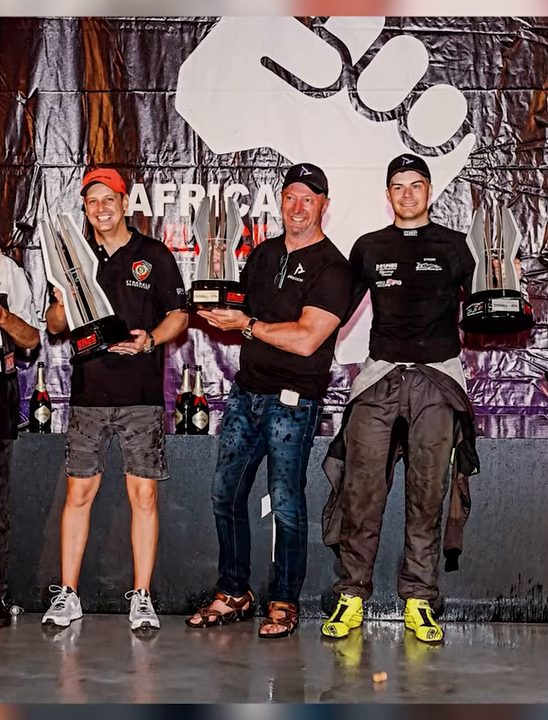

Motorsport / Endurance
Endurance racing, business and high performance
Nick Adcock on the six-race deal he made with his wife that turned into 26 years and over 350 races, the Wilbur Smith novel that brought him to South Africa, and why he races endurance now, not sprints.

Nick Adcock's racing career started with a negotiation. He had no contacts in motorsport at all, unlike many young drivers who inherit a father's connections and know which ladder to climb; his own opening came from sharing an office building with someone already racing, who offered him a rented seat in a UK one-make series. His first ever motor race, in May 2000, was in a Rover Tomcat Turbo, a two-litre turbocharged saloon competing in the X1 series alongside a companion Volkswagen Vento VR6 championship, the same car sold in South Africa as the Jetta. He'd had one test session beforehand, at Mallory Park, and had agreed with his then wife that he would do six races and get it out of his system. He finished ninth out of thirteen cars that day, a second off the fastest time, a result he is careful to state plainly rather than round up. "Everyone, when they do these podcasts, they always give one or two places better than they did," he says. "I've checked, I was ninth." Twenty-six years and more than 350 races later, the six-race agreement is a distant memory: at the time of this conversation he holds the 2025 European Le Mans Series title, having also won it in 2022 and 2024, and finished runner-up in the 2025 Asian Le Mans Series LMP3 class. He has also driven Peter's own Juno endurance car in past seasons, winning championships in it.
A Wilbur Smith novel and a container of mobility scooters
Adcock's path to South Africa started in a college library. Studying civil engineering in the UK, he picked up When the Lion Feeds by Wilbur Smith, the Rhodesian-born novelist who spent much of his life in Cape Town, and became hooked on his fiction set across Southern African history, the kind of writing, he says, that could make you smell the earth and the rain from a library chair in England. He first visited South Africa in 2000, kept returning for European winters, and eventually decided to build a business there rather than just holiday. He knew no one in the country, not a single contact, and started by finding a recruitment agency and hiring one employee to begin with. Starting from a UK business selling electric beds, riser chairs, mobility scooters and walk-in bathrooms through direct-to-consumer television advertising, he shipped over a container of mechanisms and motors, found a local contractor to build the bed surrounds themselves, and built a South African operation from nothing. He has lived there full time since 2010, building the South African operation while still commuting back to run the original UK business, which he sold to a venture capital firm about three and a half years before this conversation once his business partner there wanted to retire.
Racing itself had to wait behind a flying career for years, six or seven months a year spent away from home on long-haul rosters. It was the COVID lockdowns that ended it: two weeks of quarantine before a single day's flying, then two more weeks of quarantine before he could come home, a month lost to one flight. When his airline work stopped, he treated it as the opening he'd been waiting for. His first real endurance outing came in the 2022 Kyalami Nine Hour, sharing a Juno prototype with Byron Mitchell after Byron's father, Gordon, offered the seat outright: no fee for Adcock as driver, in exchange for Gordon running and maintaining the car himself with his son inside it. Adcock isn't certain whether they finished sixth or ninth in class that day, calling it more an experiment in whether the combination could work at all. The 2024 Nine Hour brought a real controversy, one Adcock was open to discussing on air. His team had already been presented trophies and sprayed champagne for an outright win when officials reviewed new infrared in-car camera footage and found that, under a late safety car, a co-driver had briefly slipped off a glove to clear grit from his eye, a technical breach of the rulebook. Officials physically reclaimed the trophies and handed down a time penalty that dropped the team to second, a decision Adcock and much of the paddock considered disproportionate given the rulebook's own standard remedy for that infraction is normally a financial fine to the team rather than a change in race result. An appeal was still open at the time of this recording. Adcock says the result stung less than it might have, since the team had already secured the 2024 European Le Mans Series title separately that year, and calls his crew the moral victor regardless of how the appeal landed. The following year, having cut out travel and holidays entirely to commit to the car, they finished fifth outright and third in Class A for the 2023 championship, the result Peter has referenced elsewhere on this site as one of his own proudest results too.

Why endurance suits him now, and sprints don't
Adcock jokes that what actually grows with age isn't experience so much as the frontal lobe, the part of the brain responsible for risk assessment, and that the growth shows up on track as hesitation exactly where a younger driver commits without a second thought. He used to race against people his own children's age; these days it's closer to his grandchildren's. Adcock is direct about what changes as a racing driver ages. Comparing onboard laps with an 18-year-old French driver in Europe's Ultimate Cup series, he found their lines and braking points nearly identical, down to the same points on track. The only difference was 1.8 seconds a lap, made up of fractions of a tenth gained in the entry, mid-corner and exit of every one of sixteen corners. "That is what you lose," he says. Put in a sprint race today, he doubts he'd be competitive. Endurance racing rewards something else entirely: the ability to replicate a consistent lap for hours, manage tyres, and drive a car the same way on a full tank as an empty one.
"If I die tonight on the motorway, I'll die happy."
That was his reaction driving home from his first race in 2000, staring at a results sheet on the passenger seat. He now races around 20 endurance events a year, competitive specifically because he is rarely out of the car for long, a pace that would be impossible on the original six-race deal.